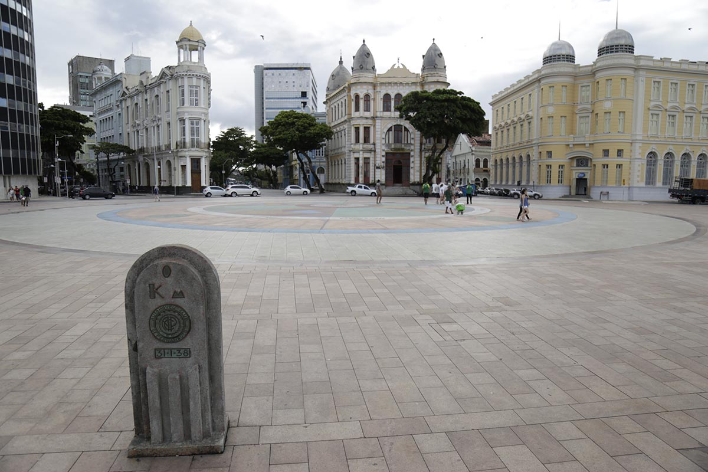
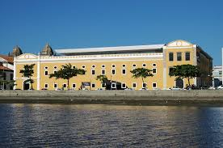

Praça do Marco Zero
A Praça do Marco Zero é um espaço público localizado nas proximidades do Marco Zero, com vista para o Rio Capibaribe.
Cais da Alfândega
O Cais da Alfândega é um ponto histórico e cultural, onde estão localizados diversos restaurantes, bares e espaços para eventos.